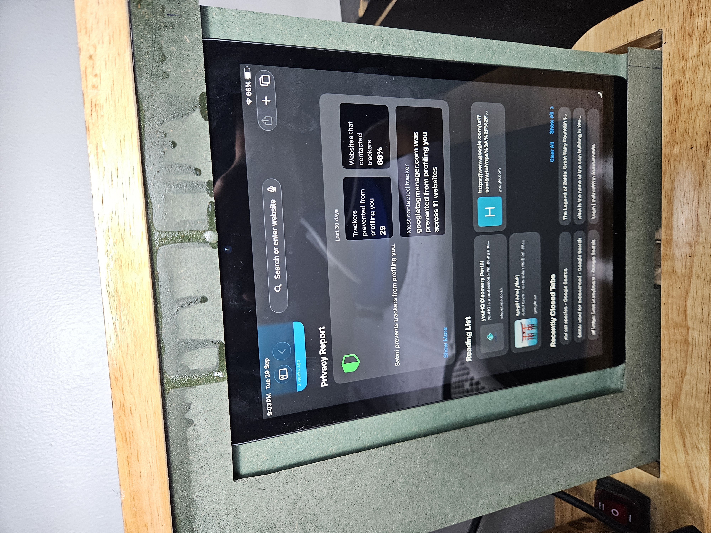
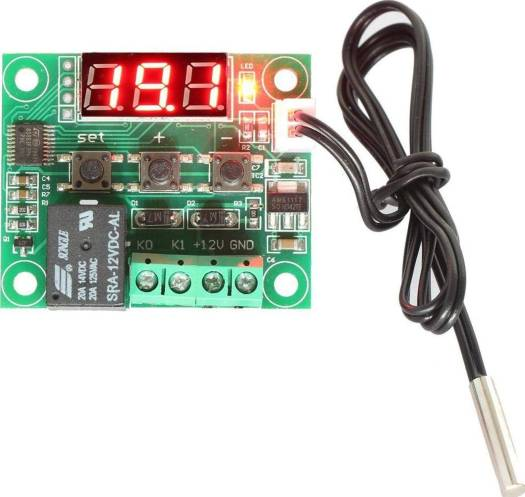
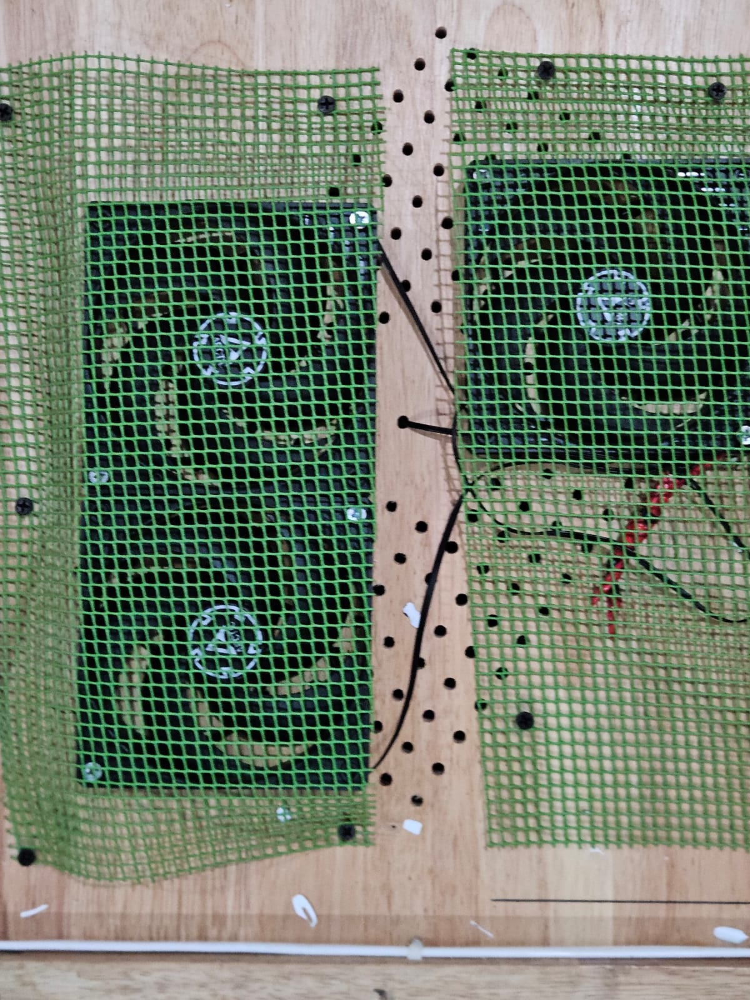
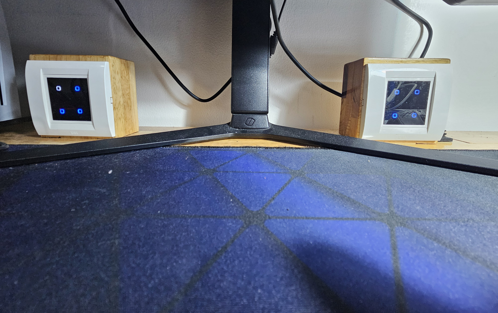
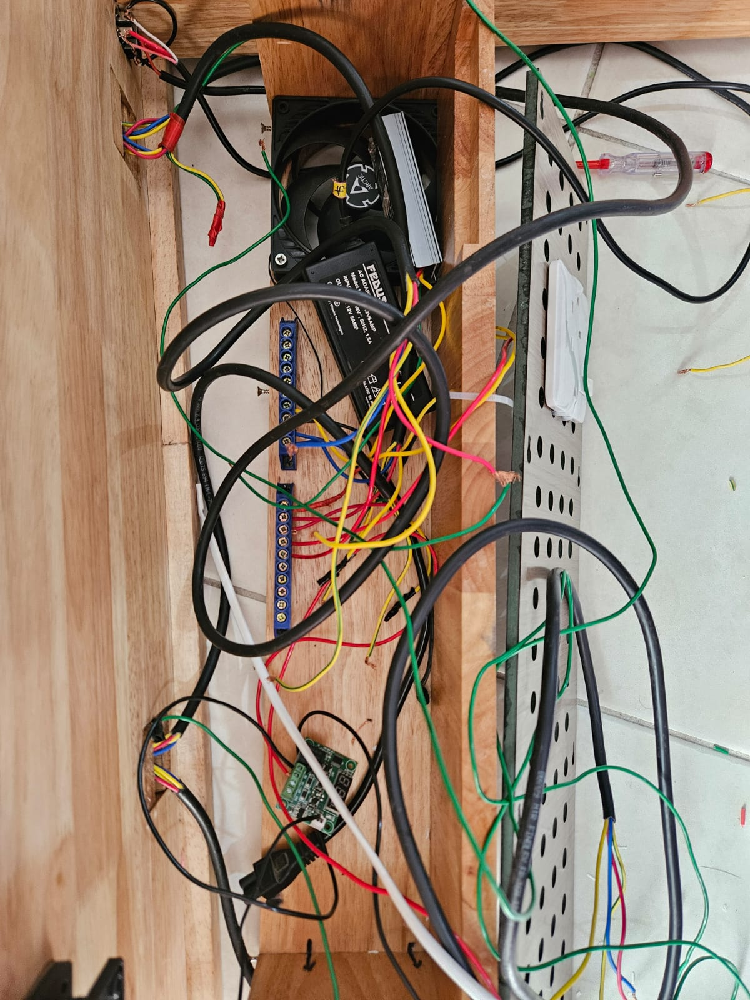
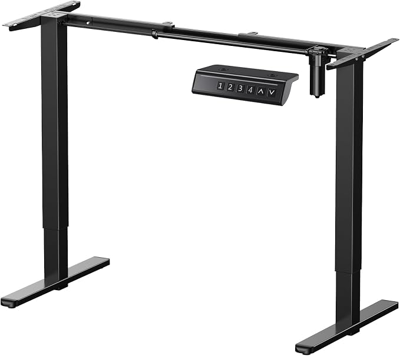

Motorized rails
Standard desk surfaces waste your room by being static. Our custom motorized platforms retract fully into the frame, hiding your display to keep the workspace sharp and totally uncluttered.
Technical benchmark
The custom AR Smart Desk architecture delivers a micro-controlled environment where efficiency is quantified through mechanical elegance. Engineered with integrated circuitry and high-torque actuators, my design eliminates the technical debt found in commercial mass-market units, ensuring absolute stability for elite computing platforms.


Active cooling analysis
Stock furniture lacks airflow, trapped heat ruins your rig. My AR Smart Desk utilizes an automated fan grid. Driven by Arduino logic, the system tracks ambient heat constantly, adjusting blade speed to ensure your components stay cold. This smart regulation provides supreme cooling power while remaining quieter than any standard gaming setup or generic office workstation on sale.
Mechanisms

Standard desk surfaces waste your room by being static. Our custom motorized platforms retract fully into the frame, hiding your display to keep the workspace sharp and totally uncluttered.

Forget bulky plastic hubs on top of your wood. Our capacitive buttons are built into the grain. Total invisible power, physical response, and smooth interaction with all desk robotics.

We unlock your environment by hiding all gear inside. Deep internal builds remove the requirement for extra shelving or plastic trays that normal retail furniture always forces you to buy.
Power and motion
Cheap retail models use weak, noisy motors meant for light tasks. My custom builds employ high-torque industrial actuators linked to a master power core. This design provides perfectly level transitions and stable electricity for your entire workstation, preventing the frame wobble or power surges common in commercial products found at big-box stores or online mass-market shops.
